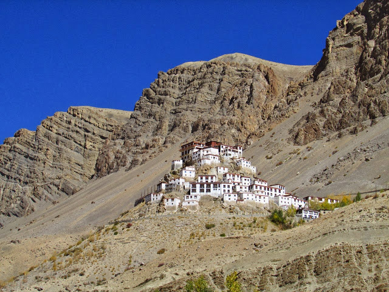

Trip Overview
India Untravelled invites you on a most spectacular journey through the cold mountain desert of Spiti Valley, nestled in the high Himalayas of Himachal Pradesh. In the dramatic backdrop of stark barren mountains, Spiti, Ladakh’s lesser-known cousin, offers travellers a glimpse in the life and culture of some of India’s most remote villages, which remain practically cut off from the rest of the country for 6 months of the year!
This “Magical Spiti” trail begins in Manali, from where you journey through the magnificent Rohtang and Kunzam passes and into the little known valleys of the Chandra and Spiti rivers. You continue on to the highest villages in the world and experience Spitian culture through traditional homestays, while visiting ancient monasteries that are the cultural and spiritual hubs of the Spitian way of life. In the process of discovering the magic of Spiti, you help contribute to the responsible development and conservation of the valley.
In a span of 6 days, this trail provides a memorable glimpse of the region, and the duration of the trip can be increased based on your dates and preferences.
Please email us at untravel@indiauntravelled.com to plan and book your travels.
Trip Highlights
Bhuchen Performance: A rare Tibetan Buddhist tantric performance to get rid of evil spirits, which originated in Tibet and is now found only in Spiti.
Traditional Spitian homestays: A chance to stay with local families in some of the highest inhabited villages in the Himalayas, indulge in their warm hospitality, and closely observe their lives.
Yak ride: Journey across the Himalayas on the local mode of transport – yaks!
Asia’s highest post office: Stop by Asia’s highest post office in Spiti, to post a letter back home.
A 1000-year-old monastery: In 1996, the Tabo Monastery in Spiti marked 1000 years! Monks have literally been meditating here for thousands of years.
Traditional Spitian folk: A close insight into the culture, music and folk dance of the Spitian people.
Mountain biking: The more adventurous can ride a mountain bike (only downhill if you wish) on some of the most rugged back-country trails of Spiti.
Spitian pottery: Learn the basics of Spitian pottery and make your own Spitian souvenir.
Sample the local brews: In winter, average temperatures in Spiti fall to an average of -30 degrees celcius. The local brews are pretty potent, but worth a try.
Chandrataal Lake: Visit the breathtaking lake of the moon goddess on your way back from Kaza.
Please email us at untravel@indiauntravelled.com to plan and book your travels.
Brief Itinerary
The Magical Spiti trail takes you on spectacular mountain roads, and gives you an intimate experience of life in this remote valley. This trail can be customized based on your travel days and interests.
Day 1: Drive from Manali to Kaza
A gradual 10-14 hour ascent, on stunning and precarious mountain roads, takes you to Spiti’s administrative capital, Kaza. The breathtaking mountain passes – Rohtang Pass and Kunzum Pass, the ancient forests of pine and oak, the winding Chandra and Spiti rivers, and the magnificent Chandrabhaga range of mountains will keep you company on this journey, which is an unforgettable part of your destination.
Day 2 & 3:Spiti’s higher villages
After acclimatizing to the high altitude in Kaza, you spend the next two days exploring the remote villages of Spiti by car. Explore an over 1000-year-old monastery in a charming little mountain town. Meet the Bhuchens and witness a rare tantric performance that began in Tibet but is now found only in Spiti. Hike up a narrow mountain road to a pristine mountain lake. Experience your first Spitian village homestay. Indulge in local food and handcrafted local brews. Partake in traditional folk music and dancing in the mountains. And explore our partner organization’s efforts to conserve the sensitive ecology of the high Himalayas.
Day 4: Trek / Yak ride
Having acquainted yourself with the unique and spectacular trans-Himalayan villages, it’s time to put your adventurous side to the test! Trek 4-6 hours through the alpine meadows of Spiti, along snow leopard and Himalayan wolf habitats, into the grazing pastures of the local livestock. Chances of spotting some illusive Himalayan wildlife along the way are pretty high.
You have the option of replacing trekking, or mixing it up, with the local means of transport in these high Himalayas – Yaks. Ride a yak in the spectacular backdrop of the mountains, to arrive in one of Spiti’s highest inhabited villages for your last homestay on this trip.
Day 5: Mountain biking
As you descend back from the higher villages to Kaza, you have the option of hopping out of your car and manoeuvring the mountain roads on a mountain bike. Feel the wind in your hair and adventure in your heart, as you ride along some of the most rugged back-country trails, along one of Spiti’s most spectacular monasteries.
Back in Kaza, you can play with clay, learn the basics of traditional Spitian pottery, and make your own Spitian souvenir to take home.
Day6: Drive from Kaza to Manali
We know the valley of Spiti must have you falling in love by now. Hop back into your jeep to embrace the thrill of riding across the Kunzum pass again. If time and weather permit, you can take a worthwhile detour to the mesmerizing Chandrataal Lake, the lake of the moon goddess flanked by spectacular Himalayan views.
Continue your journey down to the valley of the Chandra river, through the Rohtang pass, and back to Manali.
Contact us at untravel@indiauntravelled.com to get the detailed itinerary for this trip or to check availability for your dates.
Please email us at untravel@indiauntravelled.com to plan and book your travels.
Costs
Costs depend on itinerary and number of people. Costs on request
Please email us at untravel@indiauntravelled.com to plan and book your travels.
Location:
Please email us at untravel@indiauntravelled.com to plan and book your travels.
Gallery
Spiti
- A moment in the mountains. Photo by Piyush Patni
- A top meditation caves. Photo by Nidhi Wadhwa
- Blue sheep! Photo by Umesh Nanawarre
- Chandrataal Lake. Photo by Umesh Nanawarre
- Demul. Photo by Umesh Nanawarre
- Dhankar Lake. Photo by Kushagra Singhal
- Kee monastery. Photo by Umesh Nanawarre
- Magical Spiti!
 Mountain biking. Photo by Piyush Patni
Mountain biking. Photo by Piyush Patni- On a yak in the mountains. Photo by Mansee Shah
- Spiti River. Photo by Nidhi Wadhwa
- The charming village of Nako. Photo by Umesh Nanawarre
 The young ones. Photo by Umesh Nanawarre
The young ones. Photo by Umesh Nanawarre- Tug of war with young llamas!
- Village homestay. Photo by Umesh Nanawarre
- Walking on the mountain roads. Photo by Sunil Nair.
{kind=link}
{kind=link}
{kind=link}
{kind=link}
{kind=link}
{kind=link}
{kind=link}
{kind=link}
{kind=link}
{kind=link}
{kind=link}
{kind=link}
{kind=link}
Please email us at untravel@indiauntravelled.com to plan and book your travels.
Reviews
“Everything was above our expectations. We all are so happy with the hospitality.
Thank you so much for such wonderful and unforgettable memories.”
~ Shashin and friends, travelled to Kinnaur and Spiti in August 2016
To feature your reviews about this trip, please email them to untravel@indiauntravelled.com
Please email us at untravel@indiauntravelled.com to plan and book your travels.
Responsible Travel
How this trip makes a difference:
- The accommodation offered on this trail is a family-run homestay, giving you a chance to interact closely with your hosts and understand the culture and traditions of the region.
- The guided trip to Pottery Village on day 2 directly benefits nine village families, and a part of the revenue is channeled to a village development fund for the overall development of the local community.
- The guided trip to Little Tibet on day 3 is offered in collaboration with the Tibetan Youth Congress, to help preserve Tibet’s unique art, culture and traditions.
- The Pottery Village and Little Tibet trips give you the chance to interact with the local craftsmen, and buy souvenirs directly from them.
- The sunset walk in the pristine lakes of Delhi is organized in collaboration with an organization working to develop clean technology, handicrafts, and sustainable income sources within the village, which was hit by the mining ban in the region. The walk directly contributes revenue to village families involved in facilitating it, and indirectly to the upliftment of the entire community.
- The revenues generated from this trail are reinvested to further the cause of responsible travel in the region and in India.
How you can make a difference on this trip:
- Carry a good water bottle and ask to refill drinking water. Refrain from buying numerous plastic mineral water bottles.
- Pack your bags with environmentally friendly things. Carry as little plastic as possible.
- Do not leave behind any non-biodegradable waste. Carry batteries and other toxic waste back to the cities where waste management is in place.
- What you wear has an impact – dress ethically and appropriately.
- Respect the local culture and refrain from physical intimacy in public places.
- Local food is great. Try it as much as possible and avoid packaged food. Ask for modifications in the food according to your taste, instead of wasting it.
- Avoid excessive consumption of alcohol and refrain from drugs, especially in public places.
- Seek permission before photographing people, so their privacy is respected.
- Do not pluck any medicinal plants & flowers, and do not disturb the wildlife.
- While staying in a homestay, take the time to interact with your hosts and appreciate that you are staying with a family. Please don’t expect room service!
Please email us at untravel@indiauntravelled.com to plan and book your travels.
Please email us at untravel@indiauntravelled.com to plan and book your travels.